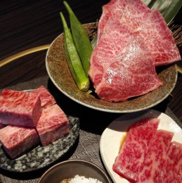

ซูชิอร่อยเด็ดจาก แน่นอนว่าเมนูอันดับหนึ่งที่ถามใครก็รู้จักแน่ ๆ ก็คือ “ซูชิ” หรือที่คนไทยบางคนเรียกกันจนติดปากว่า “ข้าวปั้น” เจ้าซูชิเป็นอาหารที่ทำขึ้นมาจากการหุงหรือหมักข้าวญี่ปุ่นที่มีลักษณะค่อนข้างกลมและเหนียวด้วยน้ำส้มสายชู
แล้วนำมาปั้นหรือห่อตกแต่งหน้าตาด้วยปลาดิบทุกวันนี้กลายเป็นเมนูยอดฮิตของคนไทย ความอร่อยคือรสชาติข้าวปั้นที่หอมนุ่มอร่อย แถมคนที่ไม่กินปลาดิบหมดห่วงไปได้เลย เพราะซูชิอร่อยเด็ดจาก Kouen Sushi Bar มีเมนูหน้าตาใหม่
ๆ ให้ได้เลือกชิมกันมากมาย เช่น ซูชิหน้าปลาไหล ซูชิหน้าสาหร่าย จึงไม่แปลกใจเลยว่าทำไมซูชิถึงเป็นหนึ่งในเมนูอาหารยอดนิยมที่สุดของอาหารญี่ปุ่นและเป็นที่รู้จักกันไปทั่วโลก
|

เนื้อย่าง หรือ ยากินิคุ (Yakiniku) เนื้อย่างสไตล์ญี่ปุ่นที่ใครได้กินก็อยากกลับมากินซ้ำ เพราะรสสัมผัสที่นุ่มละมุนของเนื้อวัวคุณภาพดีจะติดตรึงอยู่ที่ปลายลิ้นของท่าน
ยากินิคุทำมาจากเนื้อวัวคุณภาพสูงและมีความสดใหม่มาก นำมาหมักซอสสูตรพิเศษแล้วย่างบนเตาถ่านด้านละนิดละหน่อยพอให้มีความหอมกรุ่น เนื้อรสชาตินุ่มละลายในปาก แตกต่างจากเนื้อย่างสไตล์เกาหลี หรือ หมูกระทะ แน่นอนว่าอาหารขึ้นชื่อแบบนี้ราคาก็แพงใช่เล่นขึ้นอยู่กับคุณภาพของเนื้อ
แต่รับรองว่าถ้าหากได้ลิ้มลองจะประทับใจไม่รู้ลืมกันเลยทีเดียว
|
เทมปุระ (Tempura) ความสดใหม่ทำให้ทุกเมนูอร่อยมาก อย่างผักสดและอาหารทะเลที่ถูกนำไปชุบแป้ง ชุบไข่ แล้วนำไปลงทอดในน้ำมันพิเศษให้ฟู หนา กรอบ เสิร์ฟร้อนๆ ทานคู่กันกับซอสเทมปุระที่มีขิงหรือหัวไชเท้าขูดโรยอยู่ยิ่งเพิ่มรสชาติให้อร่อยยิ่งขึ้น
โดยเทมปุระที่พบเห็นกันมากจะเป็นกุ้งทอดเทมปุระ เมนูนี้สามารถหาทานกันได้ง่ายตามร้านอาหารญี่ปุ่นทั่วไป จึงหลายเป็นอีกหนึ่งเมนูยอดฮิตของคนไทยสายของทอดผู้มีใจรักความเป็นญี่ปุ่นร้านเทมปุระกรอบ ๆ
|
ข้าวแกงกะหรี่ (Japanese Curry) แกงกะหรี่ เมนูข้ามน้ำข้ามทะเลมาจากอังกฤษผสมผสานกับกลิ่นอายความเป็นญี่ปุ่นอย่างกลมกล่อมลงตัว กลายเป็นแกงกะหรี่เอกลักษณ์เฉพาะตัวของที่นี่
เนื้อ มันฝรั่ง หอมหัวใหญ่ที่ถูกเคี่ยวให้เปื่อยร่วมกับผงกะหรี่จนได้เป็นน้ำแกงรสนัว เสิร์ฟพร้อมข้าวสวยญี่ปุ่นร้อน ๆ ท็อปปิ้งด้วยหมูทอดทงคัตสึ ไข่เจียวออมเล็ต กุ้ง หอยลายหรืออื่น ๆ ตามแต่เมนูที่ร้านจะรังสรรค์มาให้ได้เลือกรับประทาน
นี่เป็นอีกเมนูที่สามารถหาทานได้ง่าย แต่แนะนำว่าถ้าเป็นร้านข้าวแกงกะหรี่โดยเฉพาะ
|
ราเมน (Ramen) ซึ่งมีเมนูอีกหนึ่งในอาหารญี่ปุ่นยอดนิยมที่คนไทยหลายคนและคนทั่วโลกคงจะรู้จักกันดีคือ ราเมน บะหมี่น้ำอาหารจานด่วนที่มีคุณค่าทางสารอาหารครบของชาวญี่ปุ่น
คุณรู้หรือไม่ว่าน้ำซุปรสหวานหอมกรุ่นของราเมนที่เราทานนั้น ต้องใช้เวลาอย่างยาวนานหลายชั่วโมงเคี่ยวน้ำซุปจากวัตถุดิบเฉพาะด้วยความพิถีพิถันของเชฟ เพื่อที่ให้ได้รสที่กลมกล่อมถูกปากลูกค้าและน้ำซุปราเมนยังเป็นเอกลักษณ์ของแต่ละร้านที่ใครก็ไม่สามารถเลียนแบบได้!
|
อูนางิ (Unagi) เมนูปลาไหลญี่ปุ่นย่างซอสอาหารยอดนิยมของชาวญี่ปุ่นมาตั้งแต่สมัยเอโดะ คนไทยเองก็ชื่นชอบเมนูนี้มากเช่นกัน อูนางิทำมาจากปลาไหลญี่ปุ่นหั่นท่อนปรุงด้วยซอสโชยุเข้มข้นหรือซอสเฉพาะตัวของแต่ละร้าน
แล้วนำมาเสียบไม้ย่างให้หอมกรุ่น ความอร่อยเด็ดอยู่ตรงที่การนำอูนางิไปทำเป็นข้าวหน้าปลาไหล , ซูชิหน้าปลาไหล และเมนูต่าง ๆ มากขึ้นในเวลาต่อมา แม้ว่าจะเป็นอาหารยอดนิยมแต่ร้านที่ขายเมนูอูนางิโดยเฉพาะจะมีไม่มากนัก
|
โซบะ (Soba) อีกหนึ่งความอร่อยที่ติดในเมนูญี่ปุ่นสุดฮิต เส้นขึ้นชื่อของชาวญี่ปุ่นคือโซบะ เมนูเส้นสีน้ำตาลทำมาจากแป้งบักวีต เคี้ยวนุ่มแต่ไม่เหนียว ทานคู่กับ
ซอสโชยุหรือซอสหวาน ราดทับด้วยท็อปปิ้งด้วยอาหารญี่ปุ่นอื่น ๆ เช่น เทมปุระ สามารถทานได้ทั้งแบบร้อน และแบบเย็น เชื่อว่าหลายคนคงสับสนระหว่างโซบะกับราเมนเพราะเป็นเมนูเส้นๆ เหมือนกัน แต่เชื่อเถอะ ว่าถ้าได้ลองทั้งสองอย่างแล้ว
คุณจะพบความแตกต่างของอาหารทั้งสอง แม้ว่าจะอร่อยคนละแบบแต่รับรองว่าอร่อยไม่แพ้กันแน่นอน
|
เมนูคาราอาเกะ (Karaage) ซึ่งหากอยากสัมผัสรสชาติไก่คาราอาเกะแท้ ๆ ในไทย เป็นเมนูไก่ทอดญี่ปุ่นที่อร่อยจนคนไทยนิยมนำสูตรมาทอดขายและทานกันมากมายในประเทศ แต่ถ้าได้ลองของต้นตำรับจริง ๆ แล้วคุณจะลืมรสชาติไก่ชุบแป้งทอดที่ขายกันทั่วไปอย่างแน่นอน
คาราอาเกะเป็นไก่ที่ถูกปรุงรสด้วยซอสและสารพัดเครื่องเทศ นำไปคลุกเคล้ากับแป้ง แล้วนำไปทอดในน้ำมันให้กรอบนอกนุ่มใน จากนั้นจึงค่อยราดซอสปรุงรสสูตรเฉพาะทับอีกที ซอสปรุงรสนี้จึงทำให้เจ้าไก่คาราเกะมีหลากหลายรสชาติตามแต่ละร้านแต่ละพื้นที่จะคิดค้นสูตรขึ้นมา
แน่นอนว่ารสชาติต้องมีความอร่อยและพิถีพิถันตามสไตล์ญี่ปุ่นเช่นเคย
|
ชาบู (Shabu) เป็นอีกหนึ่งเมนูที่ร้านรวงในประเทศไทยนิยมนำเข้ามาให้คนไทยได้รับประทาน ชาบูเป็นการนำผักสดต่าง ๆ เช่น แครอท ผักกาดขาว มาใส่ในหม้อไฟที่มีน้ำซุปร้อนๆ รวมกับหมูที่ถูกนำมาสไลด์จนบาง
อาหารทะเล เต้าหู้ เส้นอูด้งและลูกชิ้นต่างๆ ทานคู่กับซอสเปรี้ยวและซอสงา ไอน้ำซุปหอมกรุ่นที่ลอยขึ้นมาทำให้บรรยากาศในการกินหม้อไฟดูอบอุ่น คนไทยจึงนิยมรับประทานชาบูกับครอบครัวหรือกลับกลุ่มเพื่อน ในเทศกาลต่าง
ๆ
|
โอโคโนมิยากิ (Okonomiyaki) ร้ ถ้าพูดถึงโอโคโนมิยากิแล้ว หลายคนคงขมวดคิ้วถามว่ามันคืออะไร แต่ถ้าบอกว่ามันคือพิซซ่าญี่ปุ่นแล้วล่ะก็ ทุกต้องร้องอ๋อ พิซซ่าญี่ปุ่นทำมาจากแป้งสาลีผสมผัก
บะหมี่และเนื้อสัตว์แล้วนำไปย่างบนเตาเหล็กแบนๆ ทานร้อนๆ ราดด้วยซอสสูตรพิเศษ พิซซ่าญี่ปุ่นแม้จะไม่ค่อยมีขายในไทยมากนัก แต่หลายคนที่ชื่นชอบอาหารญี่ปุ่นจะต้องไปเสาะหามาทานจนได้อย่างแน่นอน
|